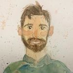

I am a translational ecologist working on engagement, open knowledge systems and communities of practice.
I believe that connecting people with nature through conservation and ecological restoration plays a crucial role in tackling the climate and biodiversity crises. I am passionate about community-engaged research, ecological art and knowledge sharing. I take a collaborative approach to academic research and teaching with an emphasis on the practical application of findings.
I use quantitative and qualitative research tools like geospatial analysis, surveys, interviews and field research to answer three critical questions: How can we best support greater engagement with nature? How can we increase access to open ecological knowledge and data? How can scientists, practitioners and community members collaborate better?
tim.alamenciak@cunet.carleton.ca
Bennett Lab
@ Department of Biology
Carleton University
1125 Colonel By Drive
Ottawa, Ontario
Canada
DRAGEN Lab
@ St. Jerome's University
University of Waterloo
200 University Ave W
Waterloo, Ontario
Canada